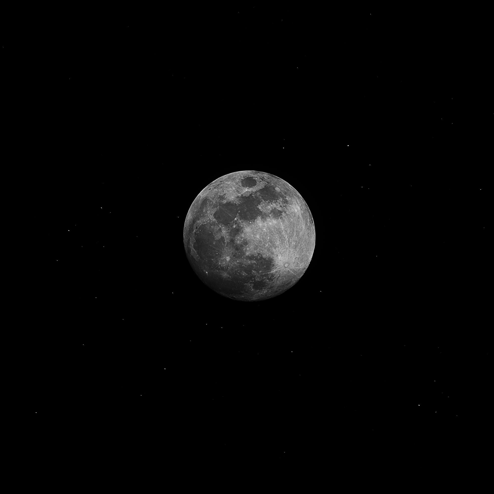

Plava luna vedrim zrakom u prelesti
divno teče
ispod polja zvjezdanije u proljećnu tihu veče..
Mesec (lat. Luna) je Zemljin prirodni satelit i ujedno najbliže nebesko telo, udaljeno u proseku 384 401 km, tako da svetlost s Meseca na Zemlju stiže za 1,25 sekundi. Mesec obilazi Zemlju po eliptičnoj stazi srednjom brzinom od 1,02 km/s, i prelazi dnevni luk od 13° 10". Mesec je čvrsto nebesko telo prečnika 3 647 km, te je po površini 14 puta, po obimu 50 puta, a po masi 81 puta manje od Zemlje. Ubrzanje sile teže je na Mesecu 6 puta manje nego na Zemlji. Mesec obiđe oko Zemlje za 27 dana 7 sati 43 minuta i 11.6 sekundi (siderički mesec). Mesec je najsjajnije nebesko telo nakon Sunca, čija svetlost je reflektovana (ne stvara vlastitu svetlost poput zvezda). Pun Mesec prividne je zvezdane veličine –12,74, albedo mu je 0,07, a ugaona veličina se vidi pod uglom od približno 0,5°. Zemlji okreće stalno istu stranu, jer se obilazak i rotacija odvijaju u istom smeru, a vremena obilaska i okreta su jednaka, što je posledica Zemljinog plimnog uticaja. Staza mu je nagnuta prema ravni ekliptike za 5° 9'. Više od polovine površine Meseca vidi se zbog libracije (59%). Mesečeve mene promene su Mesečeve osvetljenosti tokom sinodičnog meseca (mladi Mesec, prva četvrt, pun Mesec i poslednja ili zadnja četvrt), a nastaju zbog stalne promene Mesečeva položaja prema Zemlji i Suncu. Kada Mesec uđe u Zemljinu senku, nastaje pomračenje Meseca, a kada se nađe između Zemlje i Sunca (Mesečevi čvorovi), nastaje pomračenje Sunca. Privlačne sile Meseca i Sunca uzrokuju na Zemlji morske mene (plimu i oseku). Svojom privlačnošću Mesec utiče na Zemljinu stazu oko Sunca (nutacija). Gustina Meseca je 3,34 t/m3, po čemu je drugi prirodni satelit u Sunčevom sistemu. Njegovo kretanje u složenom gravitacionom polju Zemlje i Sunca podložno je mnogobrojnim poremećajima. Mesečeva udaljenost od Zemlje stalno se menja, jer se Mjesec oko Zemlje kreće po elipsi, a osim toga u dužim vremenskim razmacima njegova staza nema stalan oblik i veličinu. Prosečna je udaljenost 384 401 km, što je najpre bilo tačno izmereno metodom dnevne paralakse, zatim radarom i lidarom. Metodama nebeske mehanike obrađuje se Mesečevo kretanje u složenom gravitacijskom polju Sunca, Zemlje i planeta. Za razdoblje od 1750. do 2125. izračunato je da je Mesec najbliže Zemlji, 356 375 km, bio 4. januara 1912, a da će najdalje od Zemlje, 406 720 km, biti 3. februara 2125. Merenjem udaljenosti laserom (lidarom), zraka koji se odbija od ogledala koja su na Mesec postavili astronauti Apola 11, ustanovljeno je da se Mesec prosečno godišnje udaljava od Zemlje 3.8 cm. Na temelju tog opažanja postavljena je hipoteza da je Mesec nastao sudarom Zemlje s planetoidom veličine Marsa pre više milijardi godina, te da će se, iako gravitacijski vezan za Zemlju, i dalje udaljavati. Takav postanak Meseca može objasniti sličnost njegovog geološkog sastava sa sastavom Zemlje. Kako Zemljina gravitacija utiče na Mesec, tako i Mesečeva gravitacija utiče na Zemlju i na stabilizaciju njene ose rotacije, koja bi bez uticaja Meseca imala mnogo veću zemljinu precesiju, što bi uzrokovalo promene glacijalnih i interglacijalnih geoloških razdoblja u mnogo kraćim razdobljima nego što su se one stvarno zbivale. Mesec nema tekuću vodu ni značajnu atmosferu. Gustina atmosfere je mnogo puta manja od Zemljine, pa je po broju molekula u kubnom centimetru (danju 10 000, noću 200 000) bliža gustini molekula u međuplanetnom prostoru. Reljefne su karakteristike Meseca: mora, visoravni i krateri, sa uočljivim posledicama tektonskih procesa i vulkanizma. Morem se nazivaju tamniji delovi (ravnice okružene planinskim lancima), iako na Mesecu nema vode. Na oblikovanje površine bitno je uticao udar velikih tela, planetoida i meteorita, uz okolnosti određene stanjem unutrašnjosti i njenim razvojem (hlađenje unutrašnjosti, vulkanski procesi). Površina je pokrivena slojem regolita, sitnozrnastih rastresitih i poroznih odlomaka na kamenitoj podlozi. Temperatura površine menja se od –160 °C noću do +120 °C danju. Postanak Meseca  Na bazi opažanja postavljena je hipoteza da je Mesec nastao sudarom Zemlje s planetoidom veličine Marsa pre više milijardi godina. Glavna Mesečeva mora i Mesečevi krateri na bližoj strani Meseca. Topografija Meseca. Krateri Aristarh (levo) i Herod (desno) Starost Mesečevih tela merena je radioaktivnom metodom i ustanovljeno je da je u rasponu od 4,6 do 3,2 milijardi godina. Ranije je već bilo izmereno doba meteorita od 4,6 do 4,7 milijardi godina, pa se smatra da je to starost planetarnog sistema. Najverovatnije je da su sve planete nastale istovremeno, iz prasunčeve magline. Na Zemlji su najstarije stene datirane na 3,8 milijardi godina, što ne znači da je Zemlja mlađa, jer su promene tla mogle i a sakriju tragove starosti. Geološki procesi na Mesecu odvijali su se drukčije nego na Zemlji. Hemijski sastav Mesečeve i Zemljine materije pokazuje sličnosti, ali i razlike. Na primer, izotopni je sastav kiseonika u kori oba nebeska tela jednak. Mesečevi materijali se znatno razlikuju od Zemljinih po tome što su u njima manje zastupljeni lako isparljivi i lako topljivi elementi. Nema vode, ni oksida gvožđa. Više hipoteza nastoji da objasni postanak Meseca. Manje su verovatne hipoteze o zahvatu Meseca koji je prethodno formiran u nekom drugom području prasunčeve magline, te hipoteze o odvajanju Meseca od Zemlje zbog njene brze rotacije. Verovatnije je da je Mesec nastao od satelitskog roja čvrstih čestica u Zemljinoj okolini. U osnovi te hipoteze je ideja da telo veće mase „kupi“ na sebe tela manje mase i tako raste. Pretpostavlja se da se takvo veće telo udaljava od Zemlje zbog njenog plimnog uticaja, učinak koji se i danas oseća, te na spiralnom putu prikuplja materiju iz satelitskog roja. U zadnje vreme se razmatra i ideja o tangencijalnom udaru u Zemlju tela čija masa nije veća od desetine Zemljine mase, nakon čega razmrvljeni deo Zemlje prelazi u satelitski roj sudarom jako zagrejan i time dehidriran. Zatim se iz satelitskog roja stvara jedan prirodni satelit. Manja prosečna gustina Meseca posledica je toga što je stvoren od pripovršinskih slojeva Zemlje. Prema geološkim podacima, merenjima starosti donesenog materijala i znanja o građi unutrašnjosti može se napisati sledeći scenarij o postanku Mesečeve površine. Materijal iz kojeg se stvorio imao je manju gustinu nego materijal iz kojeg se stvorila Zemljina kora i spoljašnji plašt. Pod udarcima padajućeg materijala Mesec raste do današnje veličine i zagreva se. Površinski sloj, dubok nekoliko stotina kilometara, rastaljen je u prošlosti od -4,6 do -4,4 milijardi godina. Vreme teškog bombardovanja traje ukupno oko pola milijarde godina. U rastopljenom sloju materije manje gustine odvojile su se bliže površini. Padovi meteora ostavljaju vidne tragove tek nakon što se hlađenjem ustalila kora, pa od -4,4 do -4,1 milijardi godina stvaraju nama poznati svojstven reljef Meseca. Pritisci koji se razvijaju prilikom udara lome tlo na velikim udaljenostima i do dubine od nekoliko kilometara. Veća tela, planetoidi od desetak kilometara, izazivaju velika pustošenja i otvaraju velike udubine (basene), oko kojih od potisnutog materijala nastaju prstenovi planina. Materijal rubnih planina Mora kiša star je 3,9 do 4,0 milijardi godina. Tako su nastali baseni svih mora. Bazaltna ispuna pojavila se kasnije. Do globalnog uticaja radioaktivnog zagrevanja došlo je tek pošto se kora ohladila. Rastopljeni deo plašta probio se pod pritiskom kroz raspukline do bazena i ispunio ih. Magma se ohladila i dala današnji izgled mora. Tok lave iz dubine kasnio je u stvari mnogo miliona godina nakon iskopavanja bazena. Lava u Moru tišine stara je 3,7, u Okeanu oluja 3,3, a u Moru kiša 3,3 do 3,2 milijarde godina. Zatim se i plašt ohladio do velikih dubina. Stoga udarci meteora nisu više mogli dovesti do izlivanja magme na površinu. Mlađi bazeni imaju površinu manje prekrivenu materijalom mora. Istočno more jedno je od takvih mlađih oblika. Pod udarcem, Mesečeva je kora popucala u obliku kružnih talasa tamo gde se javila amplituda potresnih talasa, te je u ta prstenasta područja, kao i u središnju jamu, iz rastopljene unutrašnjosti potekla magma. Izgled Meseca stvaran je zajedničkim delovanjem spoljnih i unutrašnjih sila, meteorskih udara i procesa u unutrašnjosti Meseca. Ne zna se tačno kada su nastali oblici nalik kalderama i kupolasti brežuljci. Plašt je tada morao biti rastopljen neposredno pod korom, ili su u kori postojali magmatski džepovi, vulkanska ognjišta. Posle velikih katastrofa nastavljali su se manji udari, koji su rastresali već ispremeštanu površinu. Takvim prekapanjem razvio se sloj regolita na površini. U Mesečevoj kori vidljiva je njena istorija. Do promena je dolazilo jedino novim udarima i nadolaženjem lave. U pojedinim primerima može se pratiti niz razvojnih stupnjeva. Udubina Mora kiša nastala je usled katastrofalnog udara nekog planetoida, tako da je materijal rasprsnut preko čitave površine Meseca. Pre nego što se u nastalu udubinu izlila lava, već su se pojavili novi krateri, kao Arhimeda. On nije mogao nastati pre bazena Mora kiša, jer bi ga udar izbrisao; lava se morala pojaviti posle jer ga je nadopunila i izravnala mu dno. Do sličnih zaključaka dovodi brojanje kratera na jednako velikim površinama. U Moru tišine mnogo je manje kratera nego u kopnima. More kiša i Okean oluja imaju još manje kratera na površini, a prema radioaktivnom datiranju ona i jesu mlađa mora. Zanimljivo je da manji krateri nastaju češće na velikom krateru nego obratno. To svedoči da su postupno, s vremenom, u prostoru među planetama preostajala sve sitnija tela, pa je tako i s opštim smanjenjem njihova broja, jenjavalo meteorsko bombardovanje. Pomračenja Meseca i Sunca Tokom kretanja u prostoru položaji Sunca, Meseca i Zemlje se menjaju i dovode do međusobnog zaklanjanja odnosno do pomračenja Sunca i Meseca. Potpuna pomračenja se koriste u kosmičkoj geodeziji za vezivanje kontinentalnih trigonometrijskih mreža, koje pomažu u stvaranju jedinstvenog svetskog naučnog sistema. U istu svrhu se koriste i pojave okultacija zvezda (kad Mesec tokom svog kretanja sakrije neke zvezde). Privlačna sila Meseca, a u manjoj meri i Sunca (lunisolarni uticaj), uzrokuje na Zemlji plimu i oseku mora i jezera, kao i „disanje“ Zemljine kore što je 3 puta slabije od plime i oseke. Uticaj meseca na ljude i druga bića je još uvek nerazjašnjen, ali je sigurno da se insekti orijentišu pomoću Meseca.


Mesečev krater Dedal. NASA-foto Rotacija Druga strana Meseca (njen najveći deo se nikada ne vidi sa Zemlje) Lunarna libracija Sila zemljine teže je Mesec vremenom toliko usporila da se njegova rotaciona brzina prilagodila njegovom orbitalnom periodu. To znači da se Mesec okrene samo jedanput oko svoje ose u toku okretanja oko Zemlje. Zbog toga se sa Zemlje može videti samo jedna strana Meseca. 1959. godine je sovjetska letelica/sonda Luna (Luna 3) obišla Mesec i dvema fotokamerama ga snimila s daljine od 60 hiljada kilometara. Na osnovu tih fotografija, Sovjetska akademija nauka je sastavila i izdala prvi atlas dela Mesečeve površine koji se ne vidi sa Zemlje. Mesec, takođe, vremenski usporava brzinu kruženja Zemlje, tako da taj usporavajući uticaj produžuje godišnje dan na Zemlji za 20 mikrosekundi. Pritom se energija kruženja Zemlje pretvara u toplotnu energiju i impuls rotacionog kretanja se prenosi na Mesec, čije se rastojanje od Zemlje godišnje povećava za 4 cm. Ova pojava je utvrđena laserskim merenjima 1995. godine. Svojstva Mesečeve atmosfere Pogled na Zemlju iz Mesečeve orbite tokom misije Apolo 8 Mesec ima znatno slabiju gravitaciju od Zemljine, nema svoje magnetno polje, ima izrazite varijacije temperature u kratkom vremenskom intervalu i izložen je direktnim uticajima kosmosa. Ovo utiče da je atmosfera značajno ređa od Zemljine, odnosno skoro da je i nema. Iako je sastav Mesečevog tla sličan Zemljinom, atmosfera, odnosno njeni ostaci, su potpuno drugačiji. pritisak 3 × 10−13 kP helijum 25% neon 25% vodonik 23% argon 20% tragovi metana, amonijaka i ugljen-dioksida